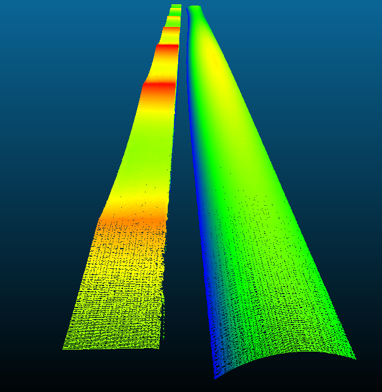
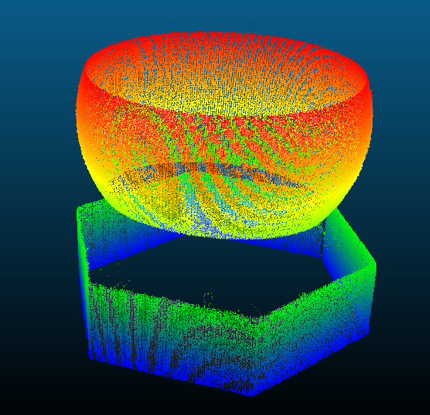
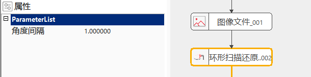
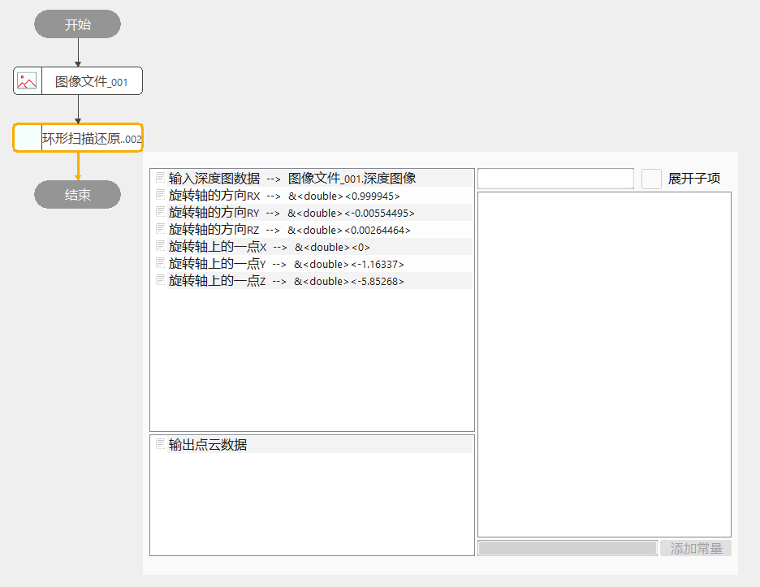

环形扫描还原工具，根据标定的结果，将圆台扫描得到的深度图进行还原，以得到真实的点云数据。


3D项目中，需要对球、圆柱、圆孔等产品进行扫描时，固定线激光，产品在转台/机械手上旋转，而后对扫描得到的点云进行还原，从而得到真实的3D数据。
step1：添加图像文件（读取深度图）、环形扫描还原工具；
step2：选中环形扫描还原工具，在左侧ParameterList中输入采集点云时，实际设置的触发角度间隔（每多少度采集一行）；

step3：双击打开"环形扫描还原工具"的参数链界面，选择需要还原的深度图数据和标定的具体结果即可。

注意输入的角度间隔是实际采集时的角度间隔，与深度图每个像素代表的Y值无关。
| 参数名称 | 参数说明 |
|---|---|
| 输入深度图数据 | 输入深度图数据 |
| 旋转轴的方向RX | 旋转轴的方向RX |
| 旋转轴的方向RY | 旋转轴的方向RY |
| 旋转轴的方向RZ | 旋转轴的方向RZ |
| 旋转轴上的一点X | 旋转轴上的一点X |
| 旋转轴上的一点Y | 旋转轴上的一点Y |
| 旋转轴上的一点Z | 旋转轴上的一点Z |
| 参数名称 | 参数说明 |
|---|---|
| 角度间隔 | 实际采集时的角度间隔（每隔多少度采集一行点云，与Y向分辨率类似） |
| 参数名称 | 参数说明 |
|---|---|
| 输出点云 | 输出还原后的点云 |
| 参数名称 | 参数说明 |
|---|---|
| 输出点云 | 输出还原后的点云数据，一般用于查看是否有效和点数 |
| 执行时间 | 工具执行时间 |
| 执行结果 | 工具执行结果 |
参见“\Samples\3D\深度图\环形扫描还原工具.gvp”。
无